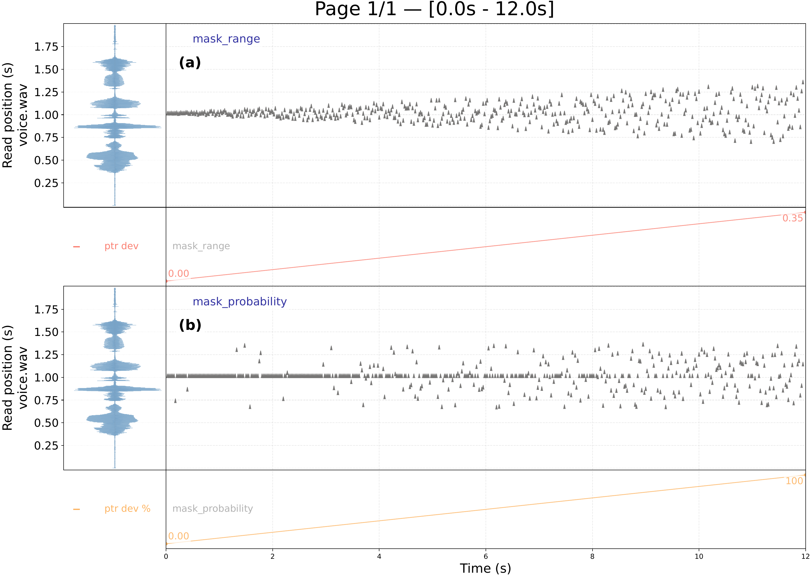
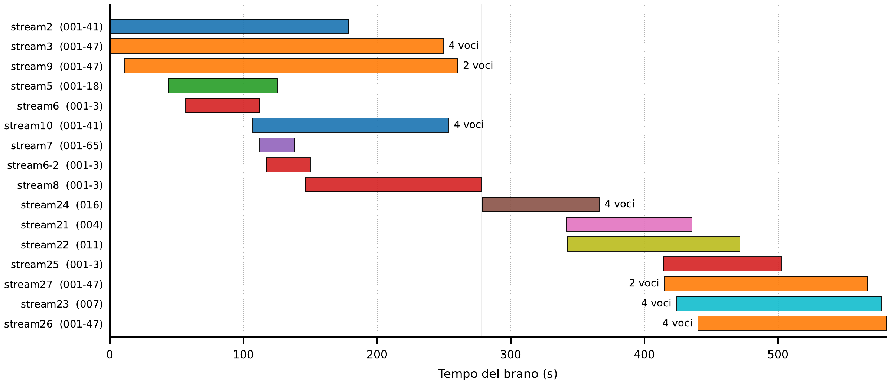
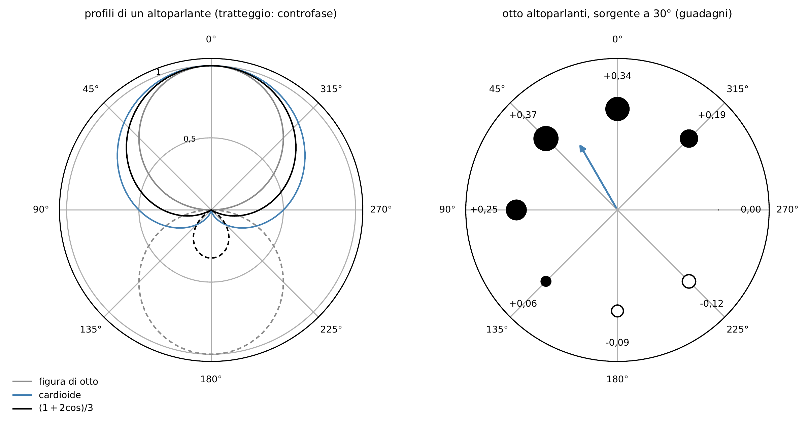

uno strumento per la sintesi granulare in Python
e il brano mare-nostrum
Giulio Romano De Mattia — Conservatorio «A. Casella», L'Aquila
Esame di Composizione Elettroacustica II · 26 ottobre 2026
github.com/DMGiulioRomano/PythonGranularEngine · doi.org/10.5281/zenodo.22996019
800
schede perforate per 30 s di suono
Roads, Klang-1, 1974
2 375
grani/s, massimo di Riverrun
Truax, 1986, tempo reale
35 000
grani/s, stream24 di mare-nostrum
tempo differito
parametro = valore centrale nel tempo + banda di variazione: la maschera di tendenza
| DMX-1000 (Truax 1988) | PGE | |
|---|---|---|
| tempo | reale | differito |
| grano più breve | 8 ms | un campione |
| densità massima | 2 500 grani/s | nessun tetto (35 000 in uno stream) |
| materiale | 4 032 campioni, ~150 ms | file di qualsiasi durata |
| controllo | tastiera, preset, rampe, maschere | un documento di testo |
| visualizzazione | maschere su un terminale | la MAP dei grani generati |
notazione prescrittiva e descrittiva nel senso di Seeger (1958)
# comuni ad (a) e (b)
duration: 12.0
sample: "voice.wav"
time_mode: normalized
(a)
- stream_id: "mask_range"
pointer:
start: 0.5
loop_unit: normalized
speed_ratio: 0.0
offset_range: [[0, 0.0], [1, 0.35]]
vn = c(τn) + ξn ρ(τn), ξn ∼ 𝒰(−½, ½)
(b)
- stream_id: "mask_probability"
deviation_probability:
pointer: [[0, 0], [1, 100]]
pointer:
start: 0.5
loop_unit: normalized
speed_ratio: 0.0
offset_range: 0.35
gate vn = c(τn) + gn ξn ρ(τn), gn ∼ Bernoulli(p(τn))

9 min 41 s · otto altoparlanti attorno al pubblico
ascolto: 1:53–2:10, il primo gruppo a sette stream

16 stream · 581 s · 9 495 350 grani · seme 1441 · un master che importa ogni stream con file:
coro (stream23): grani di 3 s, ratio 0,3, quattro voci su 38 quarti di tono, da 424 s alla fine
ascolto: 9:18–9:38, il crescendo finale del coro

Blumlein M = s cos θ, S = s sin θ
Gerzon W = s
decoder gk = s/N · (1 + 2 cos(θ − φk))
N = 8, φk = 45° · k
Σ gk = s, Σ gk² = 3s²/N
file a tre canali W M S,
decodificato in sala
formato e decoder da scrivere
doi.org/10.5281/zenodo.22996019
make docs-lint| stream | campione | onset (s) | durata (s) | grano | voci | grani |
|---|---|---|---|---|---|---|
| stream2 | 001-41 | 0,0 | 178,5 | 1–9 ms | 1 | 304 042 |
| stream3 | 001-47 | 0,2 | 249,2 | 0,8–8,4 ms | 4 | 1 499 017 |
| stream9 | 001-47 | 11,1 | 249,2 | 0,4–11 ms | 2 | 1 524 526 |
| stream5 | 001-18 | 43,8 | 81,5 | 1,1–4,1 ms | 1 | 112 093 |
| stream6 | 001-3 | 56,7 | 55,4 | 1–5 ms | 1 | 170 570 |
| stream10 | 001-41 | 107,0 | 146,2 | 1–8 ms | 4 | 633 356 |
| stream7 | 001-65 | 112,0 | 26,4 | 1–18 ms | 1 | 34 053 |
| stream6-2 | 001-3 | 116,9 | 33,0 | 1 ms | 1 | 131 601 |
| stream8 | 001-3 | 146,0 | 131,8 | 1–11 ms | 1 | 190 663 |
| stream24 | 016 | 278,6 | 87,4 | 0,1 ms | 4 | 2 727 140 |
| stream21 | 004 | 341,5 | 94,1 | 1–19 ms | 1 | 22 201 |
| stream22 | 011 | 342,2 | 129,2 | 1–3 s | 1 | 2 296 |
| stream25 | 001-3 | 414,1 | 88,3 | 1–5 ms | 1 | 302 955 |
| stream27 | 001-47 | 415,0 | 151,9 | 0,4–9,2 ms | 2 | 1 452 100 |
| stream23 | 007 | 424,1 | 152,9 | 3 s | 4 | 12 428 |
| stream26 | 001-47 | 440,0 | 141,0 | 6 ms | 4 | 376 309 |
| parametro della nuvola (Roads 2001, p. 96) | in PGE |
|---|---|
| istante d'inizio e durata della nuvola | onset, duration |
| durata del grano | grain.duration, duration_range |
| densità, variabile nel tempo | density o fill_factor, distribution |
| banda di frequenze | pitch (trasposizione) |
| inviluppo d'ampiezza della nuvola | volume |
| forma d'onda nei grani | sample, pointer |
| dispersione spaziale | pan, pan_range |